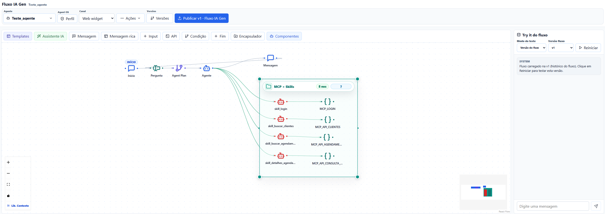
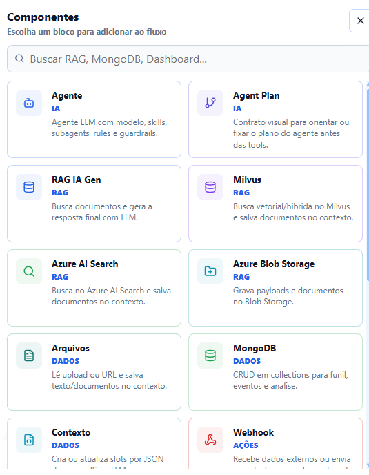
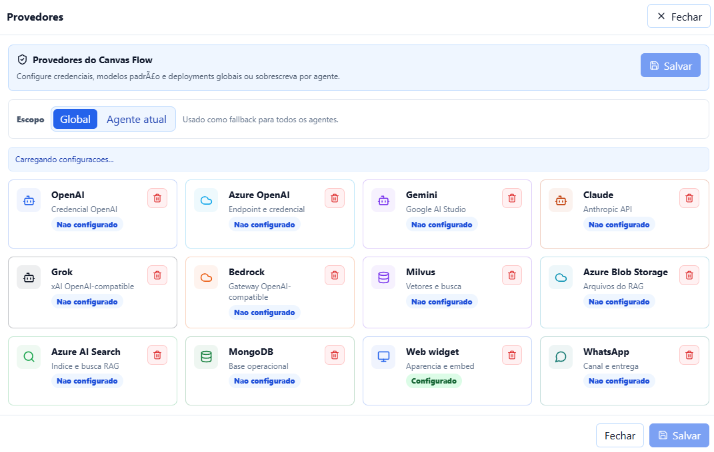

Sem Docker
npx @igoruehara/canvas-flow@latest --openWorkspace visual para automação com IA
Crie, teste e execute agentes de IA em fluxos visuais com RAG, MCP, memória por conversa, API, WhatsApp e Web Widget.
O Canvas Flow junta editor visual, backend NestJS e pacote npm standalone para que o agente seja desenhado, testado e executado no mesmo ambiente.
Monte fluxos com nodes de mensagem, input, RAG, MCP, API, condição, aprovação humana e finalização.
Rode frontend e API no mesmo processo com `npx`, usando Mongo local, Docker opcional ou MongoDB remoto.
Use Agent OS, agente orquestrador, skills e subagents para separar responsabilidades sem sair do Canvas Flow.
O produto já nasce com o fluxo, o painel de teste e a biblioteca de componentes no centro da experiência.


A ferramenta cobre os pontos que normalmente ficam espalhados entre scripts, docs e dashboards separados.
Use OpenAI embeddings, Milvus/Zilliz, Azure Search, storage local, S3 ou Azure Blob para dar contexto ao agente.
Conecte servidores MCP remotos, liste tools, execute chamadas seguras e exponha flows como MCP server.
Publique agentes para consumo por API, WhatsApp, Web Widget, webhooks e integrações internas.
Persistência por agente e conversa, releases, API keys e checkpoints para execuções longas.
Depois de montar o primeiro fluxo, estas referências mostram como ligar o agente em provedores, canais e automações reais.
OpenAI, Azure OpenAI, Gemini, Claude, Grok, Bedrock, Milvus, Azure Search, Blob Storage e MongoDB.
Canais WhatsApp e Web WidgetCredenciais, callbacks, embed do widget e publicação do agente em canais conversacionais.
Runtime API, Webhook e CronAPI keys, execução por HTTP, webhooks customizados, callbacks e rotinas agendadas.
Referência Componentes existentesDescrição dos nodes básicos, componentes de IA, RAG, dados, ações, controle e automação.
`agents.md`, guardrails, rules, skills, subagents e mcpServers viram contrato operacional do agente. O orquestrador escolhe capacidades e delega sem precisar de um protocolo externo para a lógica interna.
Coordena plano, ferramentas e especialistas.
Encapsulam capacidades reutilizaveis.
Isolam contexto por dominio ou tarefa.
O pacote npm sobe backend e frontend juntos. Docker fica opcional para subir Mongo e Milvus localmente quando você quer testar RAG sem infraestrutura remota.

Notas de produto e guias práticos para evoluir agentes reais no Canvas Flow.